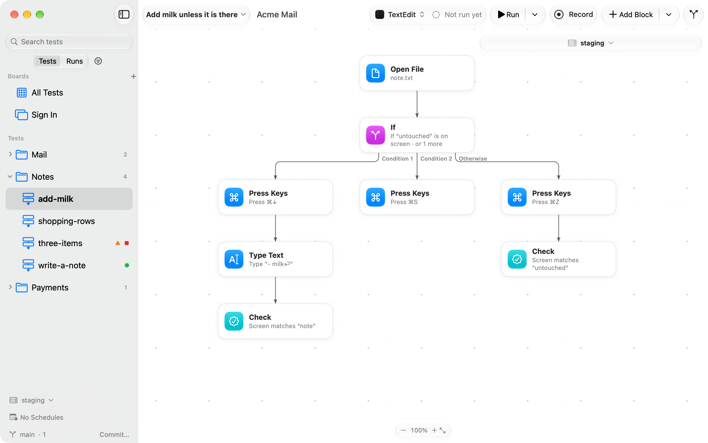
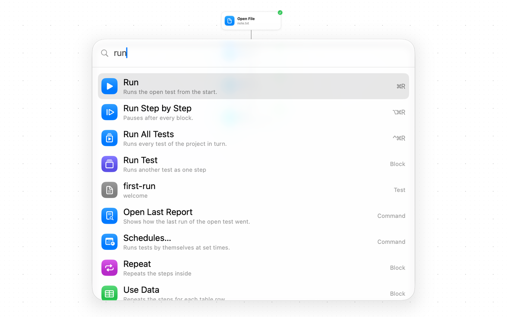
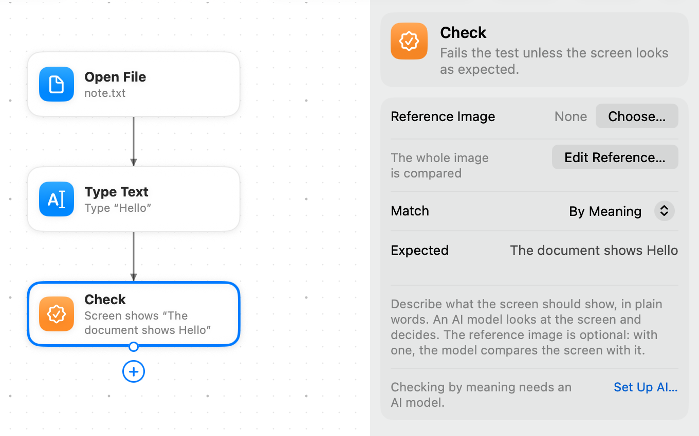
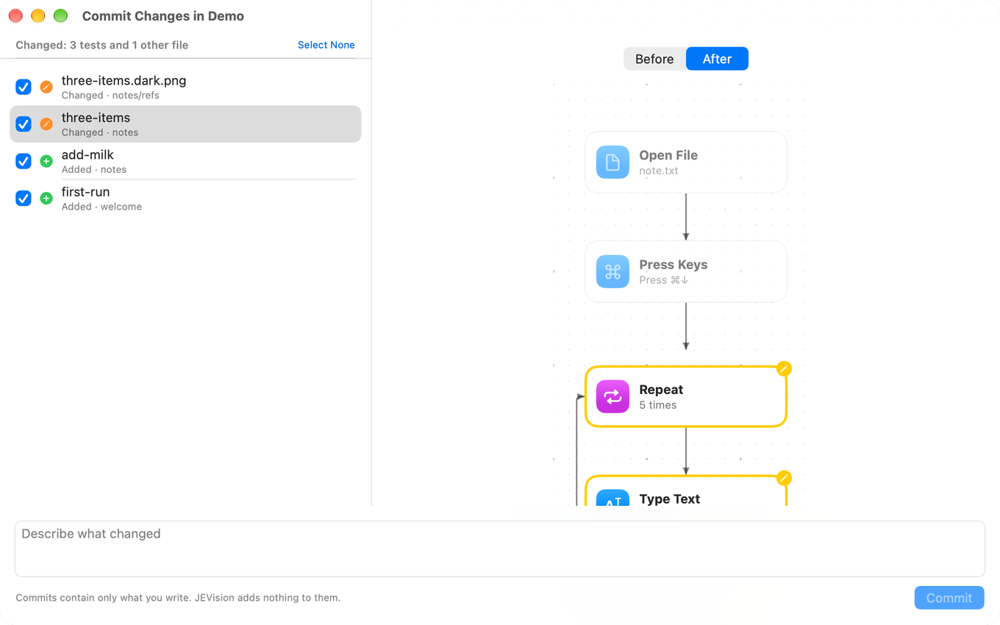
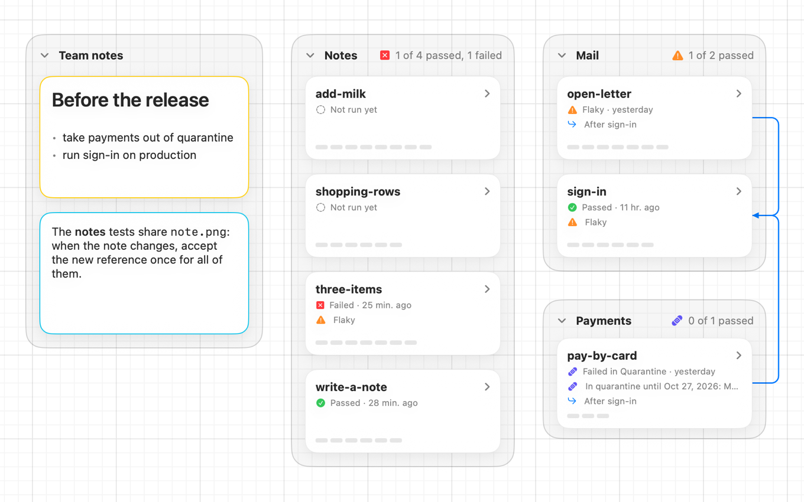
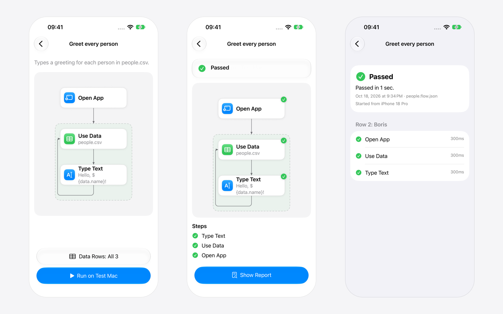

JEVision documentation
JEVision tests the interface of any Mac app, including apps you don't own and can't change. It looks at the screen and uses the real mouse and keyboard, the way a person does.
What JEVision is
A test in JEVision is a flowchart: a set of blocks joined by arrows. Each block is one step, such as “click the Sign in button”, “type the password” or “check that the inbox appears”. JEVision walks the arrows block by block. When something goes wrong, it tells you which block failed and shows you the screen at that moment.
Every test is one JSON file on your disk. You can keep tests in git, review them in pull requests and run them in continuous integration, like any other code. You don't need to read or write JSON to use JEVision: the app draws each test, and you edit it on a canvas or by recording what you do.
A quick tour

Built from simple blocks
Press Space for the block library, or right-click the canvas to put a block right there.

Several ways out
An if checks several conditions in order; the first match wins.

Everything one ⌘K away
Type a few letters of any command, block or test and press Return.

See what broke
A check shows the screen next to its reference, or just the pixels that differ.

Run all, keep the history
What passed, what failed, and which tests are flaky.

Checks by meaning
Describe the screen in words, and an AI model of your choice decides.

Git without a terminal
Commit with ⌥⌘C and open a pull request with ⌥⌘P, with a visual diff of each test.

Runs on a schedule
Every night, on weekdays or every few hours.

Project map
Every test of the project on one page, with its last result.

iPhone remote
Start a test or one row of its data from your phone and follow it block by block.


Why use it
- It works with any app. JEVision needs no access to the app's code and no testing hooks inside it. If a person can use the app on a Mac, JEVision can test it.
- Anyone can read a test. A flowchart shows the path a user takes. A tester, a designer or a manager can follow it without knowing a programming language.
- Failures are easy to understand. Every run keeps a screenshot of each step, and for checks it shows the expected picture next to what the app actually showed.
- Small, clear changes. Test files are written in one fixed form, so every change shows up as a short diff that is easy to review.
- Free and open. JEVision is open source under the MIT license. Tests, screenshots and reports stay on your Mac; a screenshot leaves it only if you choose an AI model in the cloud for checks by meaning. The privacy policy lists everything that can leave your Mac and your iPhone.
A test at a glance
This test signs in to a mail app and checks that the inbox appears. It is the example examples/sign-in.flow.json, shortened:
{
"format": 1,
"name": "Sign in with valid credentials",
"app": "com.example.AcmeMail",
"start": "open",
"blocks": {
"open": { "type": "openApp", "next": "email" },
"email": { "type": "type", "text": "demo@example.com", "into": { "image": "refs/email-field.png" }, "next": "password" },
"password": { "type": "type", "text": "${secret.ACME_PASSWORD}", "into": { "image": "refs/password-field.png" }, "next": "submit" },
"submit": { "type": "click", "target": { "image": "refs/sign-in-button.png" }, "next": "inbox" },
"inbox": { "type": "waitFor", "until": { "appears": { "image": "refs/inbox.png" } }, "timeout": "10s", "next": "messages" },
"messages": { "type": "check", "reference": { "image": "refs/message-list.png", "compare": "similar", "threshold": 0.9 } }
}
}Read it from start: open the app, type the email address into the field that looks like refs/email-field.png, type the password (a secret, never stored in the file), click the button, wait up to 10 seconds for the inbox, then compare the message list with a reference picture. Writing tests explains every block.
Where to start
Getting started
Build the app, allow its permissions, record and run your first test.
Writing tests
Every block, its fields and how blocks connect.
Checks and references
Compare the screen with pictures, or describe it in words.
Command line
Run tests from Terminal, scripts and CI.
AI assistants
Let an assistant write, run and debug tests for you.
FAQ and troubleshooting
Permissions, locked screens and other common questions.
What else it does
- Environments and secrets: run one test against staging, production or a local server.
- Data-driven tests: run one test with many sets of values from a CSV table.
- Retries, flaky tests and quarantine: tell real failures from unstable tests.
- Schedules: run tests every night or every few hours without you.
- Notifications: a message in Slack, Telegram or email when a test fails or passes again.
- Run video and reports: screenshots of every step, a video of the app, HTML and JUnit XML reports.
- iPhone remote: start runs and read reports from your phone.
- File formats: every file JEVision reads and writes.
Requirements
- macOS 26 or later, on Apple silicon or Intel.
- To build from source: Xcode 26 and Rust 1.85 or later. See Getting started.